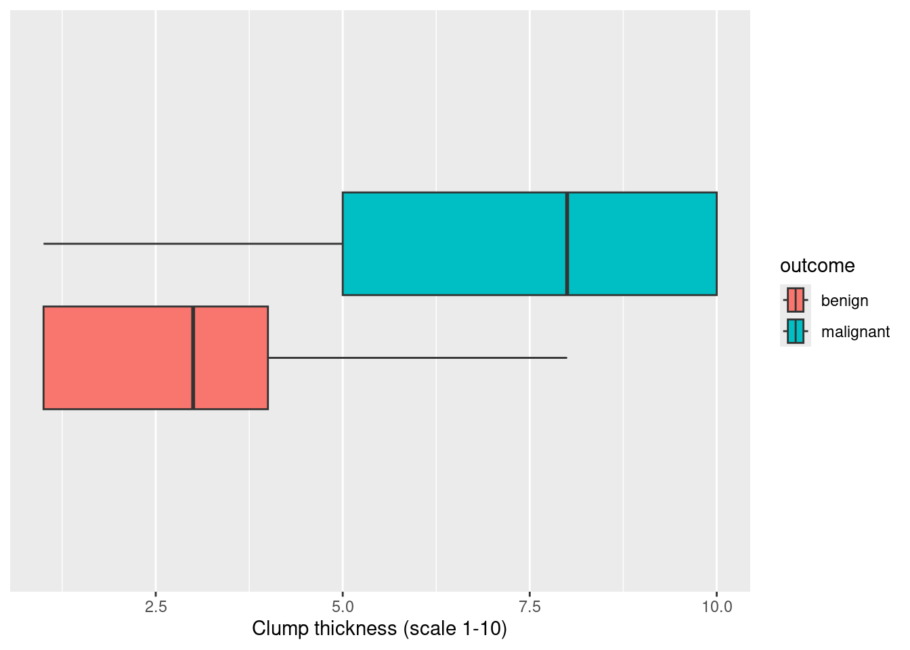
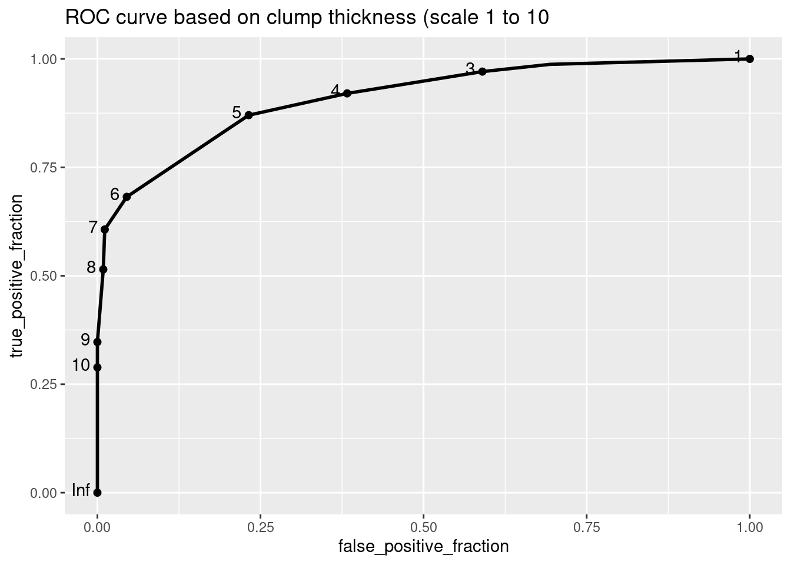
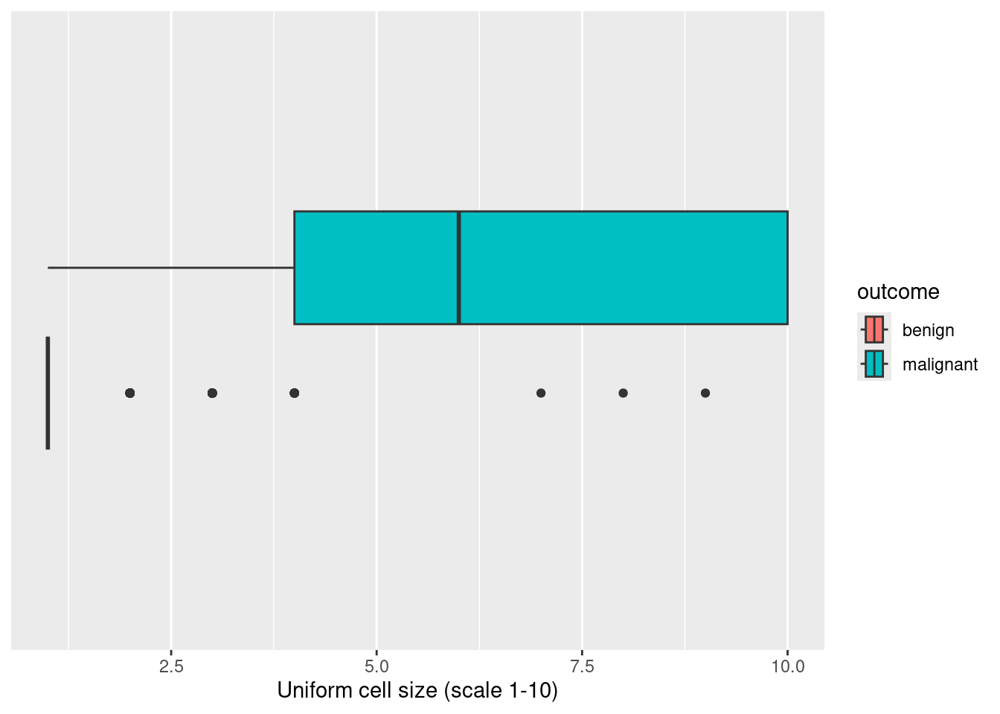
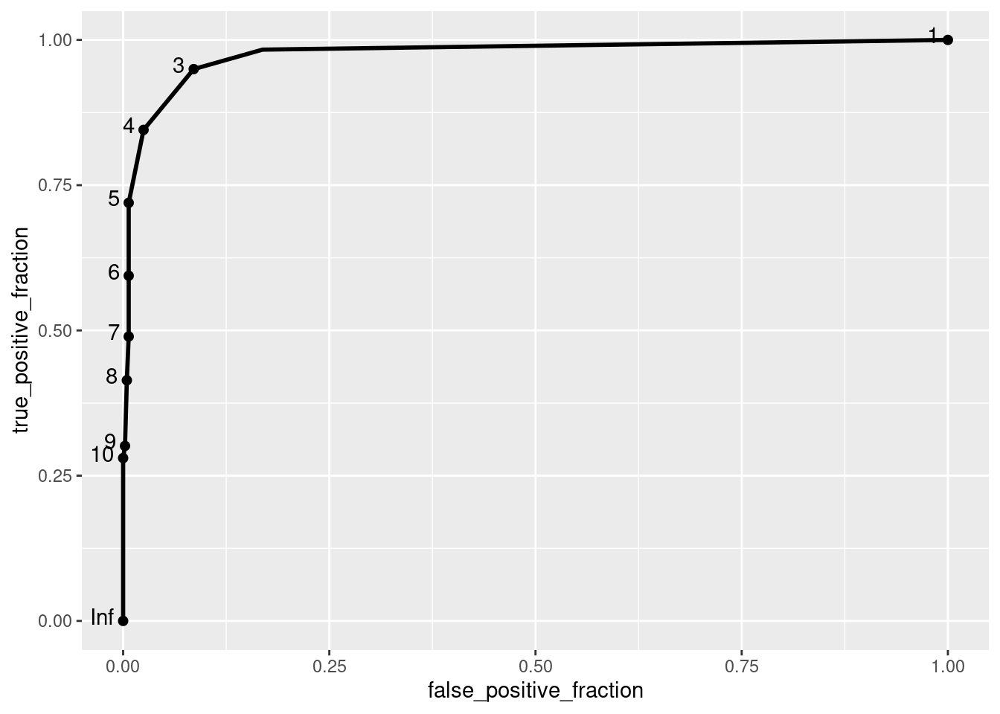

Introduction Classification
Learning objectives
- Understand the concept of classification and its applications.
- Evaluate classification models using accuracy, true positive rate (TPR), and false positive rate (TPR).
- Interpret Receiver Operating Characteristic (ROC) curves and Area Under the Curve (AUC).
We will use the plotROC package. Install it if you are using it for the first time:
Then load the necessary packages for today:
We will work with the biopsy dataset that contains information about tumor biopsy results. Nine features of the tumor were measured (on a 1-10 scale) as well as the outcome variable (malignant vs. benign).
1. Basic classifications
Let’s try different ways to classify a tumor as malignant or benign.
a. Random classification
Let’s first predict the outcome randomly.
# Create a new object
biopsy_pred <- biopsy |>
# Only keep variables of interest
select(clump_thickness, outcome) |>
# Create a predicted variable: using the `sample()` function sample
mutate(predicted = sample(x = c("malignant","benign"), # values to sample from
size = length(outcome), # how many values to sample
replace = TRUE)) # can use each value more than once
# Take a look at the predicted variable
head(biopsy_pred, 10)Were our predicted values correct?
# How do the predicted values compare to the outcome values?
table(outcome = biopsy_pred$outcome, predicted = biopsy_pred$predicted) ## predicted
## outcome benign malignant
## benign 201 243
## malignant 114 125Sometimes the predicted values were correct, sometimes were not correct.
We can compute the accuracy of our predicted values: how many observations were correctly identified as malignant or benign?
## [1] 0.477306Why does it make sense to get about 50% accuracy? Do we all get the same accuracy? Why/Why not?
Since we randomly predicted one out of 2 possible outcomes randomly, we are only correct about half the time. We don’t get the same accuracy because we all made different random predictions.
b. Classification based on 1 variable
We will focus on predicting the outcome based on clump_thickness.
Try it! Use ggplot to represent the distribution of clump_thickness for malignant and benign tumors. Does there seem to be a relationship?
# Best option: Using boxplots
ggplot(biopsy, aes(x = clump_thickness, fill = outcome)) +
geom_boxplot() +
scale_y_discrete() +
labs(x = "Clump thickness (scale 1-10)")
Tumors with a high clump thickness seem to be malignant (however, note that there is some overlap in clump thickness between the two outcomes).
Let’s classify all tumors with a high value of clump_thickness (greater than 9) as malignant, and benign otherwise.
# Update our new object
biopsy_pred <- biopsy |>
# Only keep variables of interest
select(clump_thickness, outcome) |>
# Create another predicted variable based on clump_thickness > 9
mutate(predicted = ifelse(clump_thickness > 9,
"malignant", "benign"))
# Take a look at the new predicted variable
head(biopsy_pred, 10)Were our predicted values correct?
# How do the predicted values compare to the outcome values?
table(outcome = biopsy_pred$outcome, predicted = biopsy_pred$predicted) ## predicted
## outcome benign malignant
## benign 444 0
## malignant 170 69None of the benign cases were predicted as malignant. But the majority of malignant cases were predicted as benign. Does that mean the accuracy has improved?
## [1] 0.7510981It’s better than before!
c. Classification based on any cutoff value
We chose a cutoff value of 9 for clump_thickness in the previous section. But what if we had chosen a different value? Let’s calculate the accuracy of our prediction based on different cutoff values. We’ll use a for-loop to repeat the process.
# Initialize vector for accuracy values
accuracy <- vector()
# Define possible cutoff values: from min to max clump thickness
cutoff <- min(biopsy$clump_thickness):max(biopsy$clump_thickness)
# For each cutoff value:
for(i in cutoff){
biopsy_pred <- biopsy |>
# Create a predicted variable
mutate(predicted = ifelse(clump_thickness > i, # i takes values in cutoff
"malignant", "benign"))
# Find the resulting accuracy and save it into a vector
accuracy[i] <- mean(biopsy_pred$outcome == biopsy_pred$predicted) # add element i to accuracy object
}
accuracy## [1] 0.5446559 0.6061493 0.7232796 0.8038067 0.8594436 0.8550512
## [7] 0.8243045 0.7715959 0.7510981 0.6500732Which value of clump thickness seems to result in the highest accuracy for the predicted values?
We found a value of 5 for clump thickness optimized the accuracy: about 0.8594436%.
2. Metrics
Let’s consider the classifier based on clump thickness greater than 5.
# Make predictions when the cutoff value is 5 for clump_thickness
biopsy_pred <- biopsy |>
# Only keep variables of interest
select(clump_thickness, outcome) |>
# Create another predicted variable based on clump_thickness > 9
mutate(predicted = ifelse(clump_thickness > 5, "malignant", "benign"))We will consider that a malignant case is a positive outcome and benign is a negative outcome (in medical contexts, a positive case usually means that a disease/condition was detected).
# Confusion matrix: compare the true outcomes to predicted values
table(outcome = biopsy_pred$outcome, predicted = biopsy_pred$predicted) |>
# Add total cases for rows and columns
addmargins()## predicted
## outcome benign malignant Sum
## benign 424 20 444
## malignant 76 163 239
## Sum 500 183 683The true positive rate (TPR) is the number of truly predicted positive cases over the number of positive cases.
The false positive rate (FPR) is the number of truly negative cases that were predicted to be positive over the number of negative cases.
Try it! Based on the table and definitions above, what is the value of TPR? What is the value of FPR? What shall we do to increase the value of TPR? How would it affect the value of FPR?
# TPR: Number of malignant outcome predicted malignant over number of total malignant outcomes
163/239## [1] 0.6820084## [1] 0.04504505The value of TPR indicates that about 68.2% of the malignant outcomes were truly identified while the value of FPR indicates that about 4.5% of the benign outcomes were falsely predicted as malignant. We could lower the value of clump thickness to predict more malignant cases but that also means we would have more false positive as well.
What if we wanted to do a better job at predicting malignant outcomes?
3. ROC/AUC
The trade-off between TPR and FPR can be represented by the ROC curve.
a. Receiver Operating Characteristics (ROC) curve
A ROC curve usually represents the false positive rate (FPR) on the x-axis and the true positive rate (TPR) is represented on the y-axis:
# Plot ROC depending on values of clump_thickness to predict the outcome
ROC <- ggplot(biopsy) +
# New geom!
geom_roc(aes(d = outcome, m = clump_thickness), n.cuts = 10) +
labs(title = "ROC curve based on clump thickness (scale 1 to 10")
ROC## Warning in verify_d(data$d): D not labeled 0/1, assuming benign =
## 0 and malignant = 1!
Note: R usually expects the outcome to be coded as 0 and 1, representing a negative and positive outcome, respectively. Since R assigns values in alphabetical order, here it made sense that the benign outcome is 0 and the malignant outcome is 1.
When the cutoff value to predict a malignant outcome is based on a clump_thickness greater or equal to 1, we get a TPR value of 100% and a FPR value of 100% as well. Why?
When the cutoff is clump_thickness ≥ 1, the model predicts every case as malignant, leading to a TPR of 100% (capturing all malignant cases) but also an FPR of 100% (misclassifying all benign cases as malignant).
When the cutoff value to predict a malignant outcome is based on a clump_thickness greater or equal to 10, we get a TPR value of about 29% (see below or on the graph) and a FPR value of 0% as well. Why?
When the cutoff is clump_thickness ≥ 10, the model predicts only the most extreme cases as malignant, leading to a TPR of about 29% (correctly identifying some malignant cases) and a FPR of 0% (no benign cases are misclassified as malignant).
# Number of predicted malignant values with a clump thickness of 10 out of all true malignant outcomes
sum((biopsy_pred |> filter(clump_thickness == 10))$predicted == "malignant") / sum(biopsy_pred$outcome == "malignant")## [1] 0.2887029# Note: I asked ChatGPT for a better way to this calculation but it only provided incorrect alternatives...What about the TPR and FPR values when the cutoff value to predict a malignant outcome is based on a clump_thickness greater or equal to 5?
When the cutoff is clump_thickness ≥ 5, the model leads to a TPR of about 87.5% and a FPR slighlty less than 25%.
b. Area under the curve (AUC)
The area under the curve (AUC) quantifies how well our classification is predicting the outcome.
## Warning in verify_d(data$d): D not labeled 0/1, assuming benign =
## 0 and malignant = 1!Let’s investigate what it means (this is a little bit difficult). If we randomly select 2 patients, one with a malignant tumor and one with a benign tumor, we will compare their clump thickness:
if the clump thickness was higher for the patient with a malignant tumor, we assign a probability of 1 (that agrees with our model),
if the clump thickness was the same for the two patients, we assign a probability of 0.5,
if the clump thickness was lower for the patient with a malignant tumor, we assign a probability of 0 (that does not agree with our model).
Then we replicate that process 1,000 times.
# Replicate the process 1000 times
probs <- replicate(1000,{
# Sample 1 patient with a malignant outcome
rand_positive <- biopsy |>
filter(outcome == "malignant") |>
select(clump_thickness) |>
sample_n(size = 1) |> pull()
# Sample 1 patient with benign outcome
rand_negative <- biopsy |>
filter(outcome == "benign") |>
select(clump_thickness) |>
sample_n(size = 1) |> pull()
# Assign a probability value according to our model
case_when(rand_positive > rand_negative ~ 1,
rand_positive == rand_negative ~ .5,
rand_positive < rand_negative ~ 0)
})
# AUC
mean(probs)## [1] 0.902You can interpret the AUC as the fact that a randomly selected patient with a malignant tumor has a higher predicted probability to have a malignant tumor than a randomly selected person with a benign tumor. On average, about 91% of the time, malignant tumors will have higher probabilities of being malignant compared to benign outcomes.
In a nutshell: the higher the AUC, the better the classifier is!
Try it! Pick another predictor in the biopsy dataset. Visualize the relationship with the outcome. Could this new predictor help us classify a tumor as malignant or benign? Build the ROC curve and find the corresponding AUC value. Is this new predictor resulting in a better model than the one with clump thickness?
Paste the visualization of the relationship, your ROC plot, and the value of AUC on the slide corresponding to the new predictor: https://docs.google.com/presentation/d/1tPd0MzCnx5TOIDOoMMEXbruT2I7ijQvBHq031op_uAk/edit?usp=sharing
# Let's pick another predictor: uniform_cell_size
ggplot(biopsy, aes(x = uniform_cell_size, fill = outcome)) +
geom_boxplot() +
scale_y_discrete() +
labs(x = "Uniform cell size (scale 1-10)")
# Plot ROC depending on values of uniform_cell_size to predict the outcome
ROC <- ggplot(biopsy) +
# New geom!
geom_roc(aes(d = outcome, m = uniform_cell_size), n.cuts = 10)
ROC## Warning in verify_d(data$d): D not labeled 0/1, assuming benign =
## 0 and malignant = 1!
## Warning in verify_d(data$d): D not labeled 0/1, assuming benign =
## 0 and malignant = 1!## [1] 0.9758236A high value of uniform cell size seems to be associated with a malignant outcome. The AUC value is about 98%, that’s higher than for the model with clump thickness: we have a better classification model with uniform cell size!
Recommended Resources
- Worksheet keys are posted at the end of the week on Canvas under Programming Tools.
- Recommended readings: Introduction to machine learning
- R documentation for plotROC